Designing a Naples EV Transition Pathway
Based on Xi'an Experience
Building a phased EV transition framework for Naples, centered on high-mileage fleets, charging networks, data governance and transition support.
Why did Xi'an perform well?
What can Naples learn?
Xi'an Has Built a Coordinated Base for EV Transition
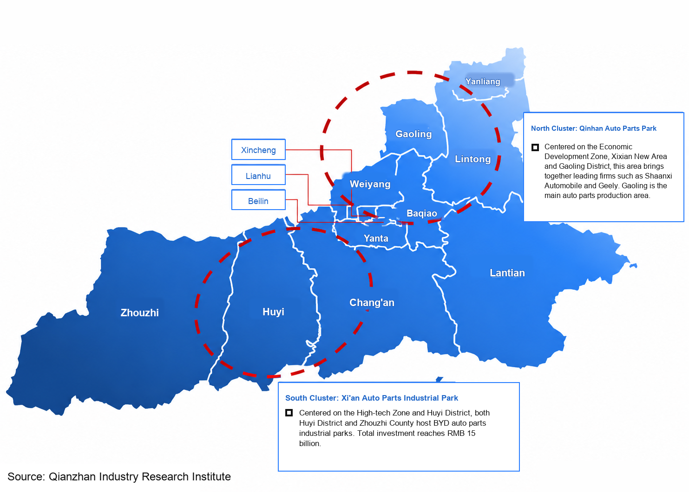
The map highlights the northern Qinhan Auto Parts Park and the southern Xi'an Auto Parts Industrial Park. Their location near the urban core and High-tech Zone shows that Xi'an's EV transition is supported by local parts, repair and operating services, not only by vehicle procurement.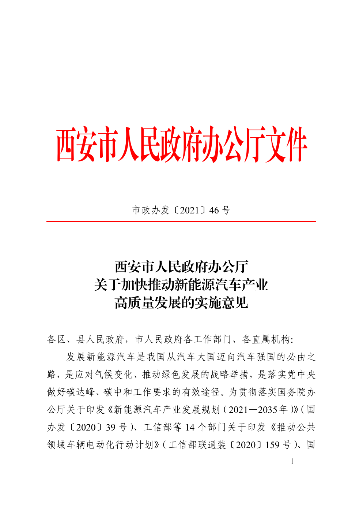
2020 planned charging-station mix (454 stations)
Charging infrastructure was scaled first: sustained expansion inside the Third Ring, 2020-2022
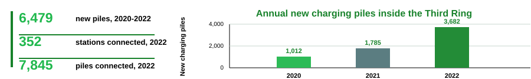
Xi'an has moved from pilots into implementation
~190kcharging piles built citywide by May 2025, including about 50k public/dedicated and 140k private piles.
73.2%green-travel share in 2022, combining private EVs, public transport and slow mobility.
All busesuse new or clean energy, creating stable charging demand in public fleets.
94.7%public charging coverage, reducing charging anxiety and supporting later fleet diffusion.
2026smart platform planned to integrate charger access, dispatch, safety checks and site ratings.
Xi'an EV implementation: policy, fleets, charging and platform feedback
Policy timetable
creates certainty
Bus, taxi and ride-hailing renewal milestones enter the 2022 / 2024 / 2028 timetable, making market expectations clearer.
High-mileage public fleets
create demand first
Bus, taxi and ride-hailing fleets run frequently and have clear management boundaries, so early conversion releases benefits sooner.
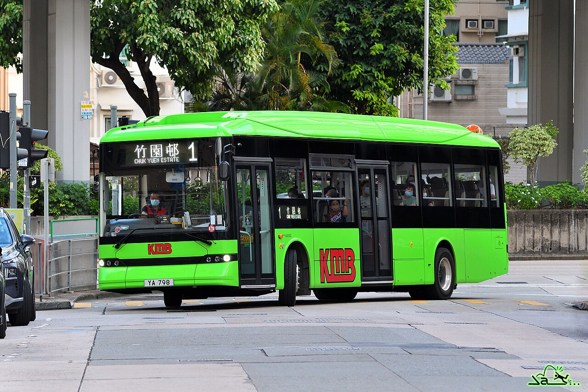
Charging network and finance
absorb demand
The 2023-2025 plan covers public institutions, commercial sites, stations and corridors, with central rewards and local subsidies.
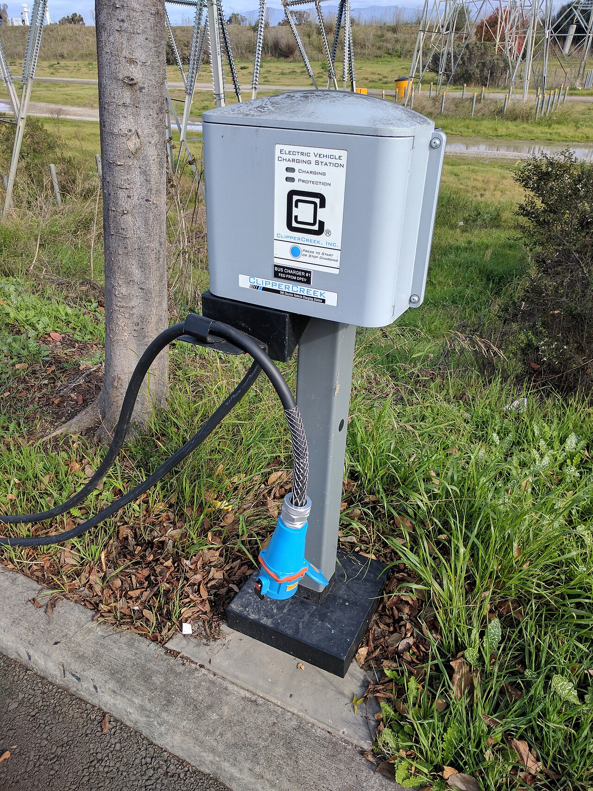
Why high-frequency fleets first?
Higher utilisation shortens payback for dedicated bus charging sites.
Platform governance recalibrates the system
The platform monitors coverage, utilisation, safety risks and low-use sites.
Data guides layout, maintenance and subsidy allocation.
Naples Has Foundations, but Not a Complete EV System
Existing assets: planning, regulation and projects
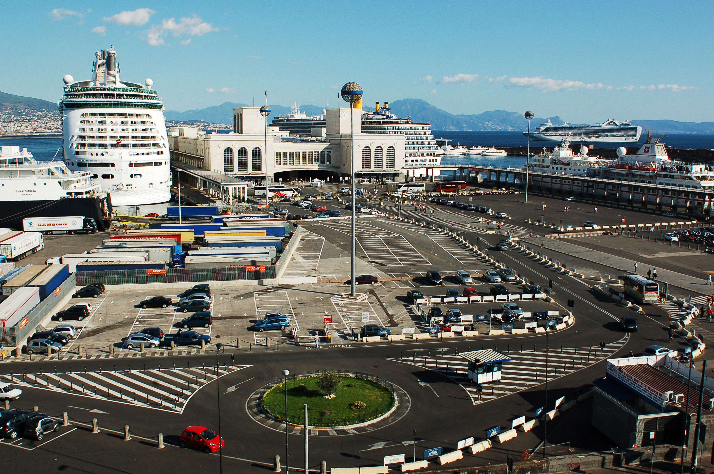
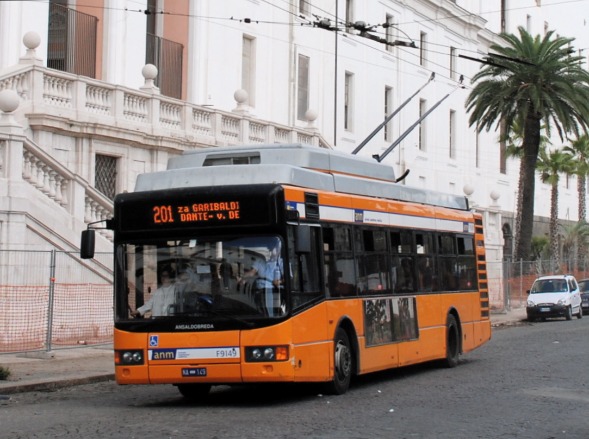
Bus electrification: funding is secured, but delivery is still ramping up
vehicles 19.4%
charging
Main pain point: assets are not yet connected as a system
Translate into action on the next page
Naples Localization Package: Policy, Fleets, Charging and Transition Support
Gaps From Page 5
Expected Effects
Naples EV Transition System Structure
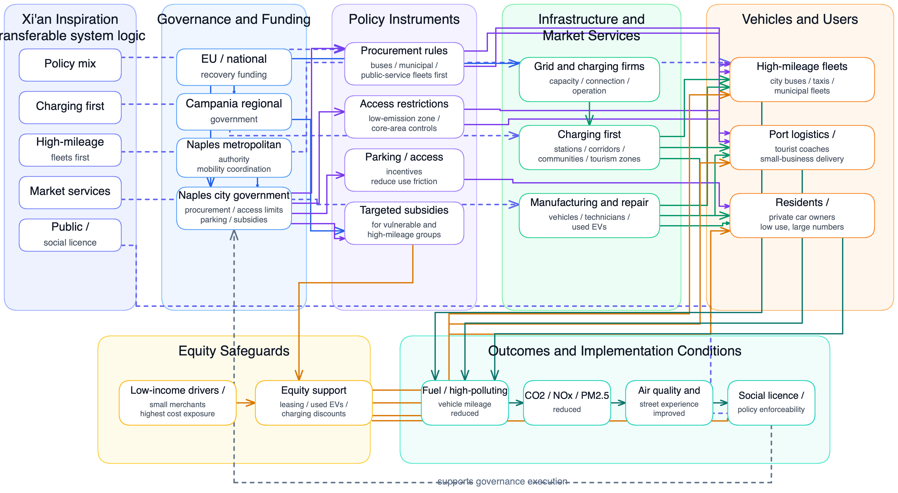
Xi'an's lesson combines policy mix, charging-first deployment, high-mileage fleets and social licence.
Naples must connect funding, procurement, ZTL / access rules and targeted subsidies with charging networks and priority fleets.
Lower fuel-vehicle mileage, better air quality and stronger public support feed back into policy enforceability.
High-Mileage Fleet Priority: Act, Support, Pilot
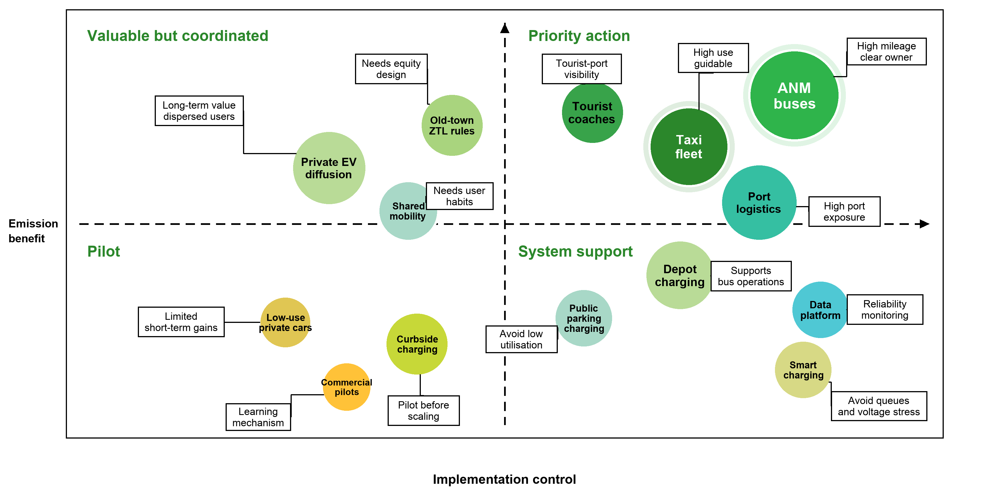
Figure 2 | Naples EV priority decision map: x-axis shows implementation control, y-axis shows emission benefit / public visibility, and bubble size indicates potential impact scale.
ANM buses, taxi fleets, tourist coaches and port logistics combine high mileage, clear responsibility and visible public benefits.
Depot charging, public parking charging, data platforms and smart charging provide the operating base for priority fleets.
Private EV diffusion, old-town ZTL rules, curbside charging and low-use cars should enter later diffusion or pilot phases.
2026-2035 Phased Implementation Roadmap
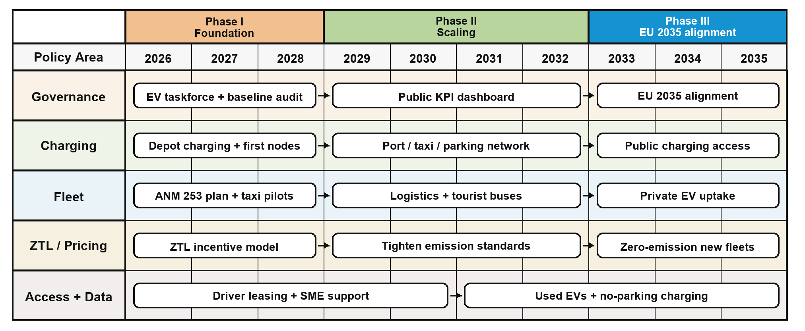
Figure 4 | 2026-2035 phased implementation roadmap: governance, charging, fleets, ZTL pricing and data support first secure buses and charging, then expand to logistics, tourism and private EVs.
Naples EV Transition Causal Loop Diagram
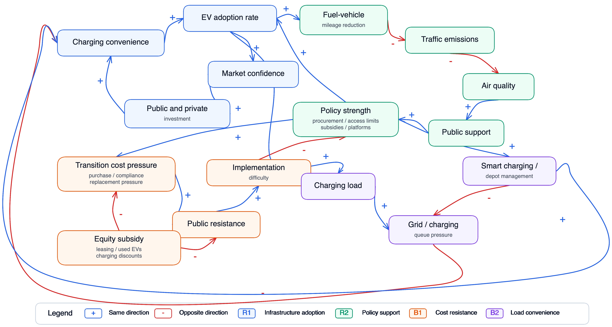
Figure 3 | Naples EV causal loop diagram: blue links indicate same-direction effects, red links indicate opposite-direction effects; R1/R2 are reinforcing loops and B1/B2 are balancing loops.
Better charging convenience strengthens EV adoption and market confidence, attracting further public and private investment.
Lower fuel-vehicle mileage improves air quality; stronger public support then makes policy strength easier to sustain.
Transition cost and charging load slow diffusion, so equity support, smart charging and depot management are required.
Phased KPI Checkpoints and Risk Control
KPI gate rule: pause the next phase if reliability, charging availability or transition support misses target.
Validate buses and charging first
- Bus reliabilityANM e-bus reliability no lower than the diesel baseline.
- Charger uptimeDepot and first public nodes reach uptime ≥ 95%.
- Baseline logRecord route VKT, charging faults, repairs and complaints.
Expand from buses to taxis, logistics and tourism
- Fleet shiftHigh-mileage fleets reach EV / low-emission share ≥ 50%.
- Spatial deliveryCore logistics micro-hubs and taxi / tourism nodes are in use.
- FeedbackPublish uptime, queues, low-use sites and complaint response.
Align with EU 2035 new-vehicle rules
- Regulatory fitNew registered cars / vans align with EU zero-emission rules.
- Diffusion readinessUsed EVs, repair capacity and public charging are available.
- Transition supportLeasing, small-business subsidies and no-driveway charging cover priority groups.
Transition support builds implementation resilience: subsidies, accessible public charging and public KPIs keep the policy durable.


Environmental Benefits Forecast and LCA Boundary
Forecast logic: electrifying high-mileage fleets first should reduce air-pollution and noise exposure in the old city, bus corridors and port areas, while climate benefits grow as the grid decarbonises.
1. Local benefits: start with exposure reduction
- Air quality: monitor road NOx / PM hotspots, bus corridors and port logistics routes.
- Noise benefit: electric buses, taxis and tourist vehicles reduce start-up, idling and acceleration noise.
- Carbon benefit: report fuel VKT displaced and grid-carbon sensitivity before updating annual CO2e results.
2. LCA boundary: go beyond “zero tailpipe”
Final Recommendation: Build the EV System First
Naples should not electrify all vehicles evenly. It should first build a controllable EV system around high-mileage fleets, then use data and transition support to expand safely.
Assets are fragmented
Naples has SUMP, ZTL tools, ANM bus funding and charging investment, but they do not yet operate as one delivery system.
Start where control is clear
ANM buses, taxis, port logistics, tourist coaches and municipal fleets bring high mileage, visible benefits and accountable owners.
Make the system runnable
Depot charging, public nodes, uptime data and local EV service firms must come before full-scale private diffusion.
Expand only after feedback
Private EV growth should follow proven reliability, fair charging access and transition support for drivers and small firms.
Fleet first
Move from public buses to taxis, ride-hailing, port logistics and tourist coaches before targeting low-use private cars.
Charging before expansion
Prioritise depot and off-street nodes, then add public parking, port, taxi and old-city edge charging points.
Data as governance
Use charger uptime, queue time, bus reliability, low-use sites and complaints to adjust subsidies and network layout.
Local EV industry
Following Xi'an's BYD lesson, grow local charging, repair, retrofit, used-EV, data and fleet-service firms.
Fair transition
Use leasing, used EVs, charging discounts and small-firm support to reduce resistance to ZTL and fleet-gate policies.
Conclusion: Naples should copy Xi'an's implementation sequence, not its exact indicators; prove the system first, then scale citywide.
Thank You
for Listening
Designing a staged EV transition pathway for Naples through high-mileage fleets, charging networks, data governance and transition support.